第16章 太阳 我们的母亲恒星
生活在太阳系内，我们将有机会近距离地研究也许是最为常见的一类宇宙天体——恒星。我们的太阳就是一颗恒星，而且是相当普通的一颗恒星，但却有着独一无二的特性：它距离我们非常近——比距离我们第二近的邻居，半人马座的阿尔尔法星，近约300,000倍。半人马座阿尔法星的距离是4.3光年，而太阳距离我们仅有8光分。因此，天文学家对太阳属性的了解要比宇宙中其他任何遥远的光点要多。
我们所有的天文知识中有很大一部分来源于现代对太阳的研究——从太阳内核中看似无限的能量生成，直到太阳大气中令人惊叹的复杂活动。就像研究我们的母亲行星地球为我们探索太阳系做好准备那样，我们现在也审视我们的母亲恒星太阳，为我们下一步的宇宙探索打好基础。
16.1 太阳的物理性质
太阳是维持地球上生命所需的光和热的唯一来源。太阳是一颗恒星——一颗由其自身重力支撑的气体发光球，由其中心发生的核聚变提供能量。太阳的物理和化学性质同其他大多数的恒星一样，尽管它们形成的时间和地点都不一样。事实上，我们的太阳似乎是一颗相当典型的恒星，正好位于可观测恒星的质量、半径、亮度和组成分布的中段。这不仅丝毫没有减低我们对太阳的兴趣，太阳这种极度平庸的特点反而是天文学家研究它的主要原因之一——他们可以把通过研究太阳现象得到的知识应用到宇宙中其他许多恒星上去。
总体属性
太阳的半径约为 700,000 km，可以通过测量太阳的角尺寸 (0.5°) 并应用初等几何直接得到（见1.6节）。太阳的质量为 2.0×1030 kg，通过观测行星轨道并应用牛顿运动定律和万有引力定律可以得到。通过质量和体积可以推导出太阳的平均密度约为 1400 kg/m3，与类木行星的密度非常类似，是地球平均密度的四分之一。
可以通过测量太阳黑子或其他表面特征在日面上横穿的时间，来估量太阳的自转。这些观测表明太阳约一个月自转一周，但太阳并不是一颗固态天体。相反，它有着较差自转，如同木星和土星——赤道地区自转快而两极自转慢。赤道上的自转周期约为25天。纬度（南北纬）60°以上从未发现过太阳黑子，但在60°纬度上的太阳黑子表明自转周期是31天。其他的测量技术，例如16.2节中所介绍的那些方法表明，朝向太阳的两极，自转周期逐渐增加。两极的自转周期并不明确，但可能长至31天。
应用辐射定律到太阳的观测光谱上，可以测得太阳的表面温度（见2.4节）。太阳辐射的分布形状近似于一个温度为5800K的物体的黑体曲线。用这种方法获得的太阳温度被称为太阳的有效温度。
太阳半径为地球半径的100倍以上，质量是地球质量的300,000多倍，表面温度远高于任何已知物质的熔点。太阳显然非常不同于我们目前所介绍过的任何一个天体。
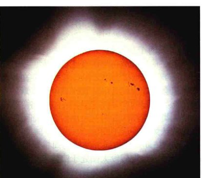 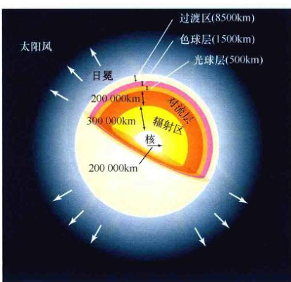太阳的结构
太阳表面不是固态的（太阳不含有固体物质），但用肉眼观察或是通过有效滤光的望远镜观察，太阳表面确切地说是某种明亮气体球的一部分。这种“表面”——太阳的一部分，发出我们可见的辐射——被称为光球层。太阳的半径约为700,000km。然而，光球层的厚度可能不会超过500km，不到太阳半径的0.1%，这正是我们认为太阳有着明确的、锐利边缘的原因（见图16.1）。
太阳的主要区域展示在图16.2中，并在表16.1中进行了总结。我们将在这一章的后面详细讨论。在光球层之上是太阳的低层大气，即色球层，约有1500km厚。光球层之上1500~10,000km是被称为过渡区的区域，在这里温度陡然升高。在10,000km以上，并延伸到远处，是稀薄的（薄的）、炽热的上层大气——日冕。在更遥远的地方，日冕转化为太阳风，远离太阳并深入到整个太阳系。光球层向下延伸20,000km是对流层，在这里，太阳的物质不断地进行对流运动。对流层之下是辐射区，在这里，太阳能量通过辐射被传输到表面，而不是通过对流。辐射区和对流区一般统称为太阳内部。太阳中心的核，半径约为200,000km，是剧烈的核反应区域，生成太阳所输出的巨大能量。
这幅合成的、透过滤光片拍摄的太阳图像中心部分显示出太阳的锐利边缘，尽管我们的恒星像所有恒星那样，也由稀薄的气体组成。边缘如此锐利是因为太阳光球层很薄。图像的外部是太阳日冕，正常情况下暗弱不可见，但在日食时可见，那时日面发出的光芒会被遮挡。注意日面上的暗斑；它们是太阳黑子。[美国国家光学天文台(NOAO)]
太阳的主要构造，没有按比例给出，但标出了部分物理尺度。光球层是太阳可见的“表面”，在其之下是对流层、辐射区和核。在光球层之上，太阳大气由色球层、过渡区和日冕组成。
光度
研究行星时，我们熟悉了尺寸、质量、密度、自转速率和温度等属性。但太阳还有一个额外的属性，可能是对地球上所有生命来说最为重要的属性：太阳向太空各向同性地（我们认为）辐射出大量的能量。让太阳光垂直通过某种光敏装置——比如说光电管，我们能测量得到每平方米的表面每秒钟所接收到的太阳能。假设我们的探测器表面积为1m2，并且放置在地球大气的顶部。那么每秒钟到达该表面的太阳能大小被称为太阳常数，其值约为1400瓦特每平方米 (W/m2)。
来自于太阳的能量约有50%~70%到达地球表面；剩下的被大气截获 (30%) 或者被云层反射 (0~20%)。因此，在晴朗的日子里，一个总表面积约为0.5m2的日光浴者的身体接收太阳能的速率约为 1400 W/m2 × 0.70 (70%) × 0.5m2 = 500 W，相当于一个小型电取暖器或五个100W的灯泡的输出。

现在让我们考量一下太阳向所有方向辐射的能量总量，而不仅仅是被探测器或被地球所截获的那一小部分。想象一个以太阳为中心、表面正好穿过地球中心的二维球体（图16.3）。球体的半径为1AU，那么它的表面积为 4π × (1AU)2，或者近似为 2.8×1023 m2。用我们所设想的球体总表面积乘以球面上每平方米落下的太阳能的速率（即太阳常数），我们可以得到太阳表面发出能量的总速率。这个量被称为太阳的光度，其大小接近 4×1026 W。
如果我们绕太阳画一个假想的球体，并且球的表面正好穿过地球的中心，那么这个假想的球体的半径就等于1AU。“太阳常数”等于在地球所处的距离上，一个1m2的探测器所接收的能量，如插入图所示。太阳光度于是等于球体表面积乘以太阳常数。[美国国家航空航天局(NASA)]
太阳是巨大的能量来源，每一秒钟，它产生的能量大小相当于100亿颗100万吨级的原子弹爆炸所发出的能量。太阳6s内发出的能量大小，如果聚焦正确的话，可以让地球上所有的海洋蒸发殆尽。3min内发出的能量可以融化我们星球的地壳。太阳上所涉及的尺度足以藐视地球上相对应的数量。让我们更仔细地钻研一下所有这些能量的起源之地。
✓ 当我们利用太阳常数来计算太阳光度时，为什么我们必须假设太阳辐射是各向同性的？
表16.1 标准太阳模型
| 区域 | 内半径/km | 温度/K | 密度/(kg/m3) | 典型属性 |
|---|---|---|---|---|
| 核 | 0 | 15,000,000 | 150,000 | 由核聚变产生能量 |
| 辐射区 | 200,000 | 7,000,000 | 15,000 | 能量以电磁辐射的形式传播 |
| 对流层 | 496,000 | 2,000,000 | 150 | 能量以对流形式传输 |
| 光球层 | 696,000 | 5800 | — | 电磁辐射能够逃逸——我们可见的太阳 |
| 色球层 | 696,500 | 4500 | — | 较冷的低层太阳大气 |
| 过渡区 | 698,000 | 8000 | — | 温度快速升高 |
| 日冕 | 706,000 | 3,000,000 | — | 炽热的、低密度的上层大气 |
| 太阳风 | 10,000,000 | >1,000,000 | — | 太阳物质逃逸进太空并向外吹向太阳系 |
这些半径数值是基于光球层半径的精确确定。其他引用的半径数值是近似的取整数值。
16.2 太阳内部
天文学家如何了解太阳的内部状况呢？正如我们刚刚所见的，太阳闪耀的事实告诉我们，它的中心一定非常炽热。但我们对太阳内部的直接了解实际是相当有限的。（见16.7节讨论的，我们了解太阳核心的一个重要“窗口”。）因缺乏直接的测量，研究者必须要利用其他手段来探测我们母亲恒星的内部运作。为此，他们构造了太阳的数学模型，结合所有可用的数据和太阳物理的理论见解，以寻找最为符合观测现象的模型。（见1.2节）回忆一下第11章中如何使用类似的方法来推断类木行星的结构。以太阳为例得到的是标准太阳模型，它已被天文学家们广泛接受。
模拟太阳结构
太阳的个体特征——质量、半径、温度和光度——每天或每年的变化都不大。尽管我们在第9章里会看到像太阳这样的恒星在几十亿年里会有非常显著的变化，但鉴于本章的主题，这类缓慢的演变在这里可以被忽略。在一个“人类”所经历的时间尺度内，太阳可以合理地被认为是一成不变的。

如图16.4所示，基于这样的简单观测，理论模型通常首先假设太阳处于流体静力学平衡状态——向外的压力正好抵消掉向内的引力。这种正反作用力之间稳定的平衡是太阳不会由于自身重力而坍缩或爆炸进入星际空间的基本原因。流体静力学平衡的假设，加上一些基本的物理知识，就能让我们预估太阳内部的密度和温度。反过来，这些信息也使得模型能预测其他可以观测的太阳属性——比如光度、半径、光谱等——并且模型的内部细节会得到细致的调整，直到预测与观测相符。这正是科学方法在生效，标准太阳模型因此产生。
像太阳这样的恒星的内部，炽热气体向外的压力与向内拉的引力相互平衡。恒星内部每一点都保持这样，因此保证了恒星的稳定。
流体静力学平衡是对太阳内部的一个重要推断。因为太阳的质量非常大，所以它的引力牵引也非常之强，所以需要非常高的内部压力才能保持平衡。这种高压随之需要非常高的中心温度，这是我们了解太阳能量生成至关重要的事实（16.6节）。事实上，在1920年前后，英国天体物理学家亚瑟·爱丁顿爵士进行的这种计算为天文学家提供了第一条线索：核聚变可能是提供太阳能量的过程。

(a) 通过观测太阳表面的运动，科学家可以确定单一波动的波长和频率，从而能够推断出有关太阳复杂振动的信息。 (b) 产生观测到的振荡的波能够传播到太阳深处，提供有关太阳内部的重要信息。[美国国家太阳天文台(NSO)]
要测试和完善标准的太阳模型，天文学家渴望获得太阳内部的信息。然而，有关光球层之下状态的直接信息是如此之少，我们必须要依靠更多间接的手段。在20世纪60年代，太阳谱线的多普勒频移测量揭示了太阳表面的震荡或颤动，像一组复杂的铃铛那样。（见2.5节、3.5节）如图16.5(a)所示，这些震荡是内部压力波（有点像空气中的声波）导致的，它们不断地在光球层上发生反射并穿过太阳内部，如图16.5(b)所示。由于这些波能穿透到太阳深处，所以分析它们在表面的振动模式可以让科学家研究远在太阳表面之下的内部条件。这一过程类似于地震学家通过观测地震时产生的P波和S波来了解地球内部那样。因此，对太阳表面震动模式的研究通常被称为日震学，尽管太阳压力波与太阳地震活动没有任何关系——因为根本没有太阳地震这样的事情。
最广泛的研究太阳振动的项目是正在进行的GONG（全球振荡网络组织的简称）项目。通过遍及全球的许多日间观测站对太阳的连续观测，太阳天文学家可以获得不间断的、高质量的、在任何时刻的跨度都为数周的太阳数据。空基太阳和日球天文台(SOHO)，由欧洲航天局于1995年发射，现在永久驻扎在日地之间距离地球150万千米的地方（见探索5-1），提供了从1995年起不间断的太阳表面和大气监测数据。分析这些数据集提供了有关太阳内部的温度、密度、自转和对流状况的详细信息，允许我们在太阳这样的大尺度上直接将实际数据与理论进行对比。标准太阳模型和观测之间的吻合是令人惊叹的——观测到的太阳振动频率和波长与模型预测值的差别在0.1%以内。
这些数据也使得科学家能够监控太阳全球的环流特征——太阳内部的大尺度气体流动，包括两条巨大的“传送带”，将太阳表面下的物质从赤道输送到两极，然后又从远低于对流层的深度为300,000km的地方输送回赤道。这种循环模式，以10~15m/s的速度运动，大约需要40年才能完成一次循环，被认为是调节黑子周期的至关重要的因素（见16.4节）。
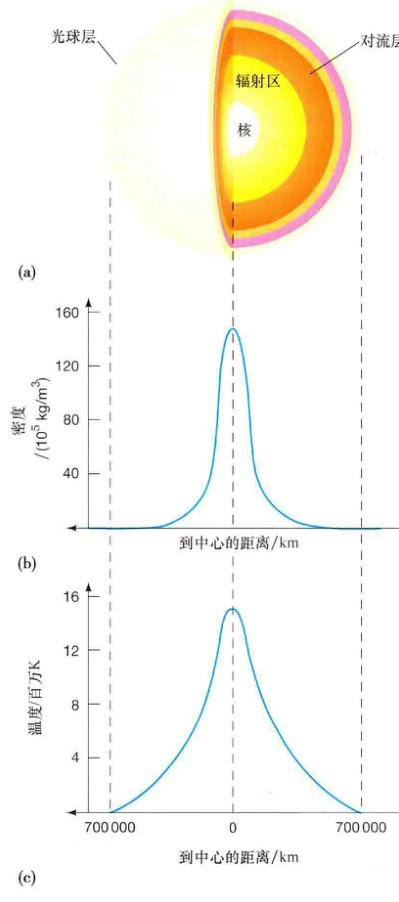根据标准太阳模型，图16.6显示了太阳密度和温度与离太阳中心距离的函数关系。注意，密度起初在中心向外骤减，然后在接近太阳光球层时降低得相当缓慢，这时距离中心大约700,000 km。密度的变化也非常大，从核心部分的约150,000 kg/m3，相当于铁密度的20倍，到约1000 kg/m3的中值（350,000 km处），这相当于水的密度，再到光球层内极端稀薄的2×10-4 kg/m3，比地球表面的空气还要稀薄10,000倍。由于太阳的核心密度是如此之高，大约90%的太阳质量包含在其内半径的一半以内。太阳密度在光球层外不断降低，在日冕外边缘低至10-23 kg/m3——与物理学家在地球实验室中所能创造出的最好的真空一样稀薄。
太阳的温度也随着距太阳内部的半径增加而降低，但不像密度那样迅速降低。计算机模型显示核心的温度约为1500万开尔文，符合引发为大多数恒星提供能量的核反应最少需1000万开尔文的已知条件，在光球层内，温度降低至观测所得的5800 K左右。
太阳内部的密度和温度变化非常巨大。(b) 和 (c) 图显示了太阳密度和温度相对于太阳内部剖面图 (a) 的变化。
随着数据质量的提高和陈年奥秘的解决，新的奥秘常常又如雨后春笋般出现。例如，星震学指出，太阳的自转速度随深度而变化——鉴于之前所提到的较差自转以及外行星上所见到的类似现象，这也许不会让人太奇怪。然而，令人费解的是这种较差运动的复杂性。表面层显示的是某种“纬向流”，高于或低于平均自转速度的条带交替排列。而在表面之下则是宽广的低速自转（赤道处）或高速自转（极区）的“江河”。对流层底部的物质似乎以自转速度振动，有时比表层快些（快约10%），有时慢些，周期约为1.3年。在更深处，辐射区内部或多或少地像固体一样自转，每隔26.9天自转一周。目前，理论学家仍不能完整地解释太阳的自转。
探索 16-1 窃听太阳
在整个太空时代的几十年里，以美国为首的不同国家，已经将宇宙飞船送往太阳系内的大多数主要天体上。其中一个仍未被勘探过的天体是冥王星——柯依伯带里最为著名的成员（译者注：2015年7月，NASA的“新视野号”探测器首次近距访问了冥王星）。另一个未近距探索过的天体是太阳。目前，太阳和日球天文台(SOHO)以及太阳动力学天文台(SDO)是仅次于专属的近距离勘察飞船的最好的航天器了。这两艘飞船以无线电向地球传送回大量的新数据，也传回更多的有关我们母星的谜题。
SOHO是主要由欧洲航天局运行的一个数十亿美元的空间项目。它在1995年发射，如今仍在运行，这个原计划3年的任务运行了18年，2吨重的智能飞船现在仍驻扎在朝向太阳、距离地球150万千米的地方——大约是日地距离的1%。那里被称为L1拉格朗日点，太阳的引力牵引正好等于地球的引力牵引——这是一个放置监控平台的好地方。相比之下，美国在2010年发射的SDO飞船，绕着地球以倾斜的、与地球同步的轨道运行。这两艘自动飞船每天24小时都凝视着太阳，它们所携带的仪器能够测量太阳上几乎所有的东西，从日冕和磁场，再到太阳风及内部振动。
这两艘飞船都正好位于地球的磁层之外，因此它们的仪器能不受干扰地研究太阳风的高速粒子。将这些定点的测量匹配到SOHO和SDO拍摄的太阳本身的图像上，天文学家能够非常详细并实时地研究太阳天气。累积的数据足够优质，任务科学家现在认为，他们可以在太阳物质抛射实际发生前几天，因此在太阳准备将这些物质抛射前，就跟踪太阳磁场环的扩展和断裂（见16.5节）。鉴于这样的日冕风暴会危及飞行员和航天员的安全，并会破坏通信、电网、卫星电子仪器以及其他人类活动，因此在准确预报太阳破坏性活动方面，科学家们开展了非常广泛的研究。
通过监测太阳的所有方面——从表面振荡到磁场结构的细节，这些飞船正稳步地精炼天文学家有关太阳结构、太阳磁场和太阳活动的模型。这些非凡的飞船已经用无线电向地球传送回了有关我们母星的丰富的新科学信息。由于我们对恒星的详细了解通常直接依赖于我们对太阳的认知，因此SOHO和SDO不断地在所有尺度上扩展我们进行宇宙研究的基础。
能量输送
炽热的太阳内部确保了气体粒子之间猛烈而频繁的碰撞。粒子向各个方向高速运动，不断地互相碰撞。在核内和核心附近，极端高温保证了气体是完全电离的。回想一下在第3章里，在逊色一些的极端条件下，原子吸收光子就能将电子激发到更高的激发态（3.2节）。然而，失去电子的原子无法捕获光子，深深的太阳内部对辐射来说是相当透明的。光子偶尔才会碰到自由电子或质子，并散射开。日核中核反应产生的能量相对容易地以辐射的形式向外传向表面。
从核心向外移动，温度下降，原子碰撞的频率和烈度降低，越来越多的电子保持束缚在母核上。随着越来越多的原子保留下能吸收逸出辐射的电子，太阳的内部气体从相对透明变成几乎完全不透明。在辐射区的外边缘，距离中心约500,000 km处（根据可用的最好的SOHO数据，实际为496,000 km），太阳核心产生的所有光子会被吸收掉。它们中没有一个能够到达表面。但是，它们所携带的能量会发生什么变化呢？
光子的能量必须要从太阳内部传送出去：我们可见的太阳光——可见的能量——证明了能量的逃出。逃出的能量以对流的方式到达表面——我们在研究地球大气时见到了相同的基本物理过程，尽管这发生在太阳这种截然不同的环境里。炽热气体向外运动，而上部较冷的气体下沉，构成对流单元的一种特征模式。通过太阳气体的物理运动，所有能量穿过对流层，被输送到表面。（注意，这实际标志着偏离了流体静力学平衡，正如我们之前定义过的，但仍然可以在标准太阳模型框架下使用。）记住，当辐射作为能量传播机制时，物质没有物理运动；对流和辐射是两种完全不同的将能量从一处传播到另一处的方式。

能量在太阳的对流层中发生了物理性的输送，这里可见沸腾的、火热的气体海洋。如图所示，对流单元胞的尺寸在较深处逐渐增加。这是一幅高度简化了的图：有许多不同尺寸的单元胞，它们的排列也不是很整齐。
图16.7是太阳对流层的一幅原理图。对流单元有着层次结构，在不同深度由许多不同大小的层。最深的层位于光球层下约200,000 km，包含有直径达数万千米的大型单元胞。然后热量不断地由一系列不断增多的较小单元胞逐步向上输送——层接一层地，直到输送到深度约为1000 km的地方，那里单个单元胞的直径约为1000 km。对流层最高层的顶端就是太阳可见的表面，在那里，天文学家能够直接观测到单元胞的尺寸。低于这一层的对流信息主要利用有关太阳内部的计算机模型推断得出。
米粒组织
图16.8是一幅太阳表面的高分辨率照片。可见表面是高度斑驳或颗粒状的，忽明忽暗的气体构成是被称为米粒组织的区域。每个明亮的米粒组织直径约有1000km——相当于地球上一块大陆的尺寸，寿命在5~10 min之间。几百万个米粒组织聚集在一起，构成对流区的顶层，正好在光球层之下。
每个米粒组织形成一个太阳对流单元胞的顶端部分。明亮区域内部和附近的光谱观测展示了气体向上运动的直接证据——气体从内部“沸腾”而出——这也是确实有对流正在光球层之下发生的证据。从明亮米粒组织中探测到的谱线看起来比正常谱线要偏蓝一些，表明物质朝向我们发生了约1 km/s的多普勒频移（2.5节）。米粒状光球层中一些黑暗区域的分光观测显示，同样的谱线发生了红移，表明物质正在远离我们。
米粒组织的不同亮度变化完全源自于温度的不同。上升的气体要炽热些，因此发出的辐射要比较冷的、向下运动的气体多。相邻的明亮和黑暗的气体区域看起来似乎十分不同，但实际上它们的温度差异不会超过500K。细致的测量也揭示了太阳表面有许多大规模的流动。除了它的单元胞直径约为30,000km之外，超米粒组织是非常类似于米粒组织的一种流动模式。随着米粒组织的运动，物质从单元胞的中心上涌，在表面流动，然后再次从边缘沉没回去。科学家们怀疑，超米粒组织是较深层内大型对流单元胞在光球层中的印记，如图16.7所示的那样。
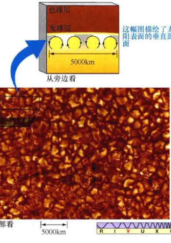这幅米粒状太阳光球层的照片是由口径1m的瑞典太阳望远镜直接指向太阳表面拍摄的，显示了大小相当于地球大陆的典型的太阳米粒组织。图像中明亮的部分是炽热物质从下涌上的区域，如图16.7所示。暗黑（偏红）的区域对应较冷气体向下沉没回太阳内部。[斯必泽空间望远镜(SST)/瑞典皇家科学院]
16.3 太阳大气
天文学家可以通过分析出现在光球层和低层大气中的吸收谱线来大量收集有关太阳的信息（3.4节）。图16.9（同样如图3.4所示）给出了太阳的精细光谱，波长范围从360 nm ~ 690 nm。注意叠加在连续背景光谱上的那些黑暗的、错综复杂的夫琅禾费吸收线。
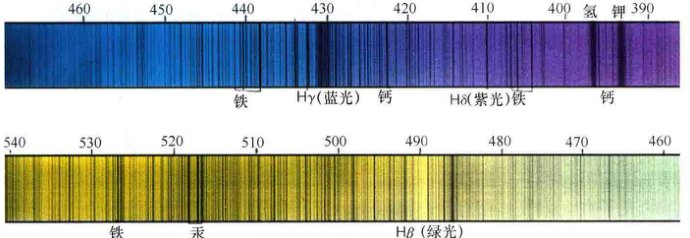太阳在可见光波段的精细光谱，显示了成千上万黑暗的夫琅禾费（吸收）线，表明在太阳的低层大气中存在着处于各种不同激发和电离态的67种不同元素。波长用纳米单位给出。[帕洛马天文台/加州理工学院]
从太阳光谱中观测并记录下了成千上万的谱线。总共有67种元素在太阳中被确认，它们有着多种多样的电离和激发态（3.2节）。可能有更多的元素存在，但它们存在的量可能非常小，我们的仪器还不够灵敏，不能探测到它们。表16.2列出了太阳中最常见的10种元素。注意，氢元素是迄今为止最丰富的元素，其次是氦元素。我们在类木行星中见过这样的分布情况，而我们会发现宇宙整体也是这样的情况。
表16.2 太阳的成分
| 元素 | 总原子数目的比例(%) | 占总质量的比例(%) |
|---|---|---|
| 氢 | 91.2 | 71.0 |
| 氦 | 8.7 | 27.1 |
| 氧 | 0.078 | 0.97 |
| 碳 | 0.043 | 0.40 |
| 氮 | 0.0088 | 0.096 |
| 硅 | 0.0045 | 0.099 |
| 镁 | 0.0038 | 0.076 |
| 氖 | 0.0035 | 0.058 |
| 铁 | 0.0030 | 0.14 |
| 硫 | 0.0015 | 0.040 |
注：表中数据引自他处，计算结果中包含四舍五入数值，因此两项比例的总和略大于100%。
太阳谱线
正如第3章里所讨论的那样，当原子或离子中的电子在不同能态中发生跃迁时，会产生谱线，并在这一过程中发出或吸收特定能量的光子（即波长或颜色）。（3.2节）然而，要解释太阳的光谱（事实上，所有恒星的光谱），我们就必须稍稍修改一下我们之前对吸收线形成的描述。我们曾说过，这些谱线是较冷的前景气体因拦截从炽热背景源发出的光而形成的。实际上，图16.9中的明亮背景和暗黑吸收线都几乎是在太阳的同一位置处形成的——太阳的光球层和色球层的底部。要理解这些谱线是如何形成的，需要更详细地重新考量太阳能量的发射过程。
✓ 能量从日核传送到光球层有哪两种完全不同的方式？
光球层之下，太阳气体的密度足够致密，光子、电子和离子之间的相互作用十分普遍，因此辐射不能直接进入太空。然而在太阳大气中，光子逃离而不与物质发生进一步相互作用的概率取决于光子的能量。回忆一下第3章，只有当光子能量正好等于电子从某一能态跃迁到另一能态所需的能量时，原子或离子才会吸收光子（3.3节）。因此，如果光子能量正好对应于气体中的原子或离子的某些电子跃迁能量，那么在它传播到更远之前，光子就可能会被重新吸收——适合吸收的元素类型越多，光子逃离的可能性越低。相反，如果光子能量不符合任何类型的跃迁，那么光子将不会进一步与气体发生相互作用，它将离开太阳前往星际空间，或者碰上地球上某位天文学家的某台探测器。
因此，当我们看太阳时，我们实际上看到的是一定深度的太阳大气，深度取决于所研究的光的波长。波长异于任何吸收特征（即能量异于任何原子跃迁）的光子在太阳气体中穿过时，或者光子来自光球层深处时，它不太可能与物质发生相互作用。然而，波长接近于这些吸收线中心波长的光子，很可能会被原子或离子捕获，因此主要是从高层（较冷的）大气中逃离出来。这些吸收线相比周围的背景要暗些，因为它们的形成处的温度要比光球层底部的温度(5800K)低一些，而大部分的连续发射是来自于光球层。（回想一下，根据斯特藩定律，发出辐射的物体亮度取决于它的温度——气体的温度越低，辐射出的能量越少。）（3.4节）因此，夫琅禾费线的存在是光球层之上的太阳大气温度随高度增加而降低的直接证据。
色球层
光球层之上是较冷的色球层——太阳大气层的中间部分。这一区域本身发出的光很少，正常情况下不能被观测到。光球层太过明亮了，主宰了色球层的辐射。色球层的相对微暗也源自于它的低密度——每单位体积内包含原子数目非常稀少的稀薄气体，不能释放出大量光子。不过，尽管色球层通常不可见，但天文学家在很长时间里也都意识到了色球层的存在。图16.10显示了日全食时的太阳，这时被月球遮挡住的是光球层——而不是色球层。色球层独有的红色清晰可见，这种颜色是由于氢元素的红色 Hα（氢阿尔法）发射线产生的，这一谱线主宰了色球层的光谱。
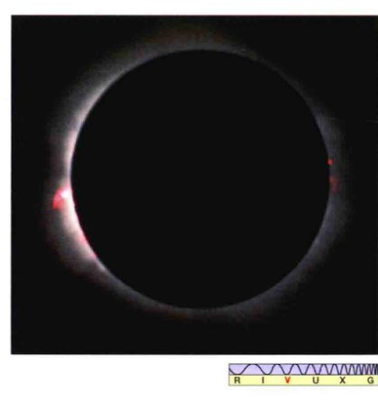这幅日全食的照片显示了位于太阳表面之上几千千米的太阳色球层。注意左边的日珥。[G. 施耐德 (G. Schneider)]
色球层绝不是波澜不惊的。每隔几分钟，就有小的太阳风暴爆发，生成被称为针状物的炽热物质喷流，喷向太阳上层大气（图16.11）。这些细长的针状物质结构以典型的约100 km/s的速度离开太阳表面并到达光球层之上几千千米的高度。针状物在太阳表面不是均匀分布的。相反，它们仅占太阳总表面积的1%，倾向于聚集在超米粒组织的边缘。这些区域内的太阳磁场也略高于平均水平。科学家推测，那些向下运动的物质会增强太阳磁场，针状物是磁场在太阳动荡的外层中受到扰动的结果。

在这幅太阳紫外图像里，可以看见从太阳色球层中冒出短暂的、狭窄的气体喷流，通常只持续几分钟。这些所谓的针状物构成细细的刺状区域，在那里，气体以100 km/s的速度逃离太阳。[美国国家航空航天局(NASA)]
过渡区和日冕
在发生日食的短暂时刻里，如果月球的角尺寸足够大，以至于光球层和色球层都被遮挡住，那么就可以看见幽灵般的太阳日冕（图16.12）。光球层发出的光线被去掉后，谱线特征发生显著改变。常见谱线的强度发生改变（这意味着成分或温度的变化，或者二者兼而有之），吸收谱变成了发射谱，一系列全新的谱线突然出现。从吸收谱到发射谱的变化完全遵循于基尔霍夫定律，因为我们是在黑暗的宇宙背景下看到日冕，而不是在来自于光球层的明亮连续谱之下看到日冕。（3.1节）
这些新的日冕谱线（某些情况下有色球谱线）在20世纪20年代发生的日食期间首次被观测到。多年之后，一些研究者将它们归因于一种地球上没有的新元素，他们称之为“Coronium”。我们现在认识到，这些新谱线不属于任何的新型原子，Coronium是不存在的。相反，新谱线的出现是因为日冕中的原子相比光球层里的原子多失去了几颗电子——也就是说，日冕里原子的电离度更高一些。因此，它们的内部电子结构和由此产生的光谱，完全不同于光球层中同种原子和离子的结构和光谱。例如，天文学家识别出日冕中对应于铁离子的谱线，它们平常拥有的26个电子有多达13个都丢失了。而在光球层中，大多数铁原子仅仅会失去1或2个电子。

日食期间，当光球层和色球层都被月球遮挡住时，可以看见微弱的、延展的日冕。[美国国家太阳天文台(NSO)]
导致大量电子剥离的原因是日冕的高温。从日食时观测到的谱线所推断出的电离度告诉我们，色球层上层的温度远远超过光球层的温度。而且，日冕的温度要更高，在那里观测到的电离度更高。图16.13显示了太阳大气温度随高度的变化。光球层之上约500km处，温度降低至最低约4500K。此后温度稳步上升。在光球层之上约1500 km处，即过渡区内，温度开始迅速上升，在高度为10,000 km的地方达到100万开尔文以上。此后，在日冕内，温度大致保持为常数，约300万开尔文，而SOHO和其他轨道探测器曾经探测到过日冕的“热斑”，其温度要比该平均值高许多倍。
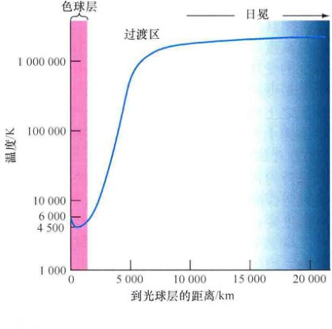低层太阳大气的气体温度变化是戏剧性的。温度以蓝色线表示，在色球层中达到最低值4500 K，然后在过渡区内急剧上升，最终在日冕里保持为300万开尔文左右。
导致这种温度急剧升高的原因还未完全明确。温度变化曲线和直觉是背道而驰的：远离热源，我们通常期望热量会减少，但太阳的低层大气内并不是这种情况。日冕一定有其他的能量来源。天文学家现在认为，是太阳光球层中的磁场扰动最终加热了日冕（16.5节）。
太阳风
电磁辐射和快速移动的粒子——多数是质子和电子，随时随地地在逃离太阳。辐射以光速远离光球层，用8min的时间到达地球。粒子运动得更慢，尽管以约500 km/s（仍然是相当大的）的速度运动，但到达地球需要几天的时间。这些不断逃离的太阳粒子流就是太阳风。
太阳风来自于日冕的高温。在光球层之上约1000万千米处，日冕气体炽热得足以摆脱太阳的引力，它们开始向外流入太空。与此同时，太阳大气不断地从下面补充气体。如果不这样，日冕在一天内就会消失。实际上，太阳是在“蒸发”——不断地通过太阳风脱落质量。然而，太阳风是极其稀薄的介质，从46亿年前太阳系形成起，太阳用这种方式丢失的质量还不到0.1%。
✓ 说明光球层光谱与日冕光谱的两种不同之处。
16.4 太阳磁场
太阳有着一个重大而复杂的磁场。太阳磁场在1908年由美国天文学家乔治·埃勒里·黑尔发现，至今仍在给科学家出难题。太阳磁场线的结构对于了解太阳外观和表面活动等许多方面是至关重要的，然而磁场线的几何细节，甚至是产生和维持整个太阳磁场的物理机制仍然是热烈研究的主题。奇怪的是，理解太阳磁场各方面的关键在于在黑尔的突破性发现之前约300年首次观测到的现象。
太阳黑子
图16.14是太阳的一幅完整光学照片，显示其表面有无数黑暗的斑点。伽利略约在1613年首先详细地研究了它们，这些“斑点”提供的第一手线索之一，是证明了太阳并不是完美的、一成不变的创造物，相反却是有着不断变化的地方。黑暗的区域被称为太阳黑子，通常直径约为10,000 km，近似于地球的大小。如图所示，黑子经常成群出现。在任意给定的时刻，太阳可能会有成百上千的黑子，或者也可能没有任何黑子。

这幅太阳的完整照片拍摄于太阳活动最大期间，展示了几群太阳黑子。图中最大的黑子直径超过20,000 km，几乎是地球直径的两倍。典型的太阳黑子直径只有这样的一半大。[帕洛马天文台/加州理工学院]
对太阳黑子的研究表明，黑暗中心的本影被灰暗的半影所环绕。图16.15的特写视图显示了一个这样的黑暗区域，附近是没有受到干扰的明亮的光球层。黑色的渐变实际是由于光球层温度的渐变造成的——太阳黑子就是比光球层气体温度低的区域。黑子本影的温度约为4500K，相比之下，半影的温度是5500K。然而，黑子仍然是由炽热气体组成的，它们看起来呈现黑色仅仅是因为它们出现在相对较亮的背景上（5800K的光球层）。如果我们能奇迹般地将太阳黑子从太阳上移走（或者只是遮挡住太阳辐射的其余部分），那么黑子就会变得明亮，就像其他任何一个温度约为5000K的炽热物体那样。
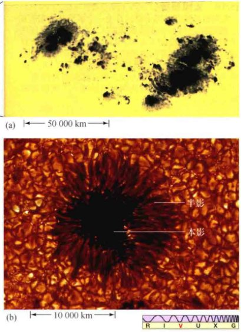(a) 图16.14中最大的那对太阳黑子的放大照片。这里展示了每个黑子是如何由较热的、明亮些的半影包围着较冷的、黑暗的本影而形成的。 (b) 一幅高分辨率的、独立的典型黑子图像，显示了黑子的结构细节以及周围的表面针状物。[帕洛马天文台/加州理工学院、斯必泽空间望远镜(SST)/瑞典皇家科学院]
太阳磁场
是什么原因导致太阳黑子的出现呢？为何它比周围光球层的温度低？这些问题的答案与太阳的磁场结构有着紧密的联系。第3章里，我们知道了通过分析谱线能够得到关于谱线形成位置处磁场的详细信息。（3.5节）事实上，黑尔有关太阳磁场的发现是根据观测太阳黑子内Hα线的塞曼效应（磁场对谱线的致宽或分裂作用）而得到的。最重要的是，这样可以确定磁场的强度和磁场线的视线方向（朝向或是远离观测者）。
一个典型太阳黑子的磁场比其邻近的、没有扰动的光球层区域的磁场强约1000倍（后者本身的磁场比地球磁场要强几倍）。此外，磁场线的方向并不是随机的，相反大致是直接垂直于（穿进或穿出）太阳表面。科学家们认为，太阳黑子比周围环境温度低是因为它们异常强大的磁场趋向于阻碍（或重定向）炽热气体的对流运动，而这种对流通常是朝向太阳表面的。
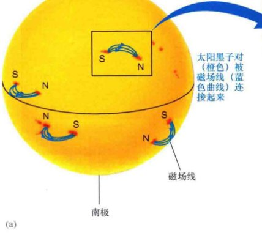太阳黑子几乎总是成对地出现，成员大都位于同一纬度但磁极性相反。图16.16(a)说明了磁场线如何穿过黑子对中的成员(S)从太阳内部出现，依次穿过太阳大气，然后通过另一个成员(N)再重新进入光球层。与在地球磁场内一样，带电粒子趋于沿着太阳的磁场线运动。图16.16(b)展示了一幅太阳磁回路的真实图像。图中可见高温气体沿着连接两个太阳黑子群的复杂磁场线网络运动。
(a) 太阳磁场线穿过黑子对的其中一个成员从太阳表面出现，然后穿过另一个成员重新进入太阳。 (b) 由过渡区和日冕探索卫星(TRACE)所拍摄的紫外图像，展示了两个太阳黑子群之间的拱形磁场线。[美国国家航空航天局(NASA)]
这背后的太阳磁场却有着许多的规律。在同一太阳半球（北半球或南半球）上，所有的太阳黑子对在任一瞬时都有着同样的磁场构型。也就是说，如果某个黑子对中前导的（以太阳自转方向定义）黑子极性为N，如图中所示，那么这一太阳半球上所有前导黑子就都有着相同的极性。更重要的是，同一时刻在另一半球上，所有黑子对都有着相反的磁场构型（S极前导）。要理解太阳黑子极性的这些规律，我们必须要更加仔细地看待太阳磁场。
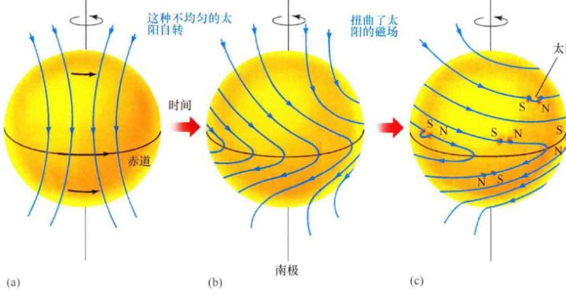(a, b) 太阳的较差自转扭曲并包裹住太阳磁场。(c) 有时候，磁场线从表面突涌而出，环状穿过低层大气，从而形成一个太阳黑子对。太阳磁场线的底层构型可以解释观测到的黑子极性模式。（见图16.21）
较差自转和对流运动的结合从根本上影响了太阳磁场的性质，进而在决定黑子数量和位置分布上扮演了主要角色。如图16.17所示，太阳的较差自转扭曲了太阳磁场，在太阳赤道附近“包裹”住太阳磁场，并最终导致任何原始是北-南极性排列的磁场重新定向为东西向排列。同时，对流运动导致磁性气体涌出太阳表面，形成扭曲并缠绕的磁场模式。在某些地方，磁场线扭结起来就像扭曲缠绕的花园里用的浇水软管，导致磁场强度增强。有时，磁场会变得很强，以至于能够克服太阳的引力，一个磁场线“管道”从表面突涌而出，环状通过太阳低层大气，形成一个太阳黑子对。底层太阳磁场一般性的东西向排列解释了每个半球上产生的太阳黑子对的磁场观测极性。
太阳（活动）周期
太阳黑子并不稳定。大多数黑子的大小和形状会改变，并且会一起出现又一起消失。图16.18显示了太阳黑子数目随时间序列的变化——在几天时间内，黑子数量有时增加、有时减小。独立的黑子可能在某处存在1~100天；一大群黑子一般会持续50天。黑子不仅会随着时间有来有去，它们在日面上的数量和分布也在有规律地变化着。多个世纪的观测发现了一个明显的太阳黑子周期。图16.19(a)显示了20世纪里每年所观测到的太阳黑子数目。黑子的平均数目每11年或大约11年达到极大，之后在新的周期开始之前几乎降至零点。
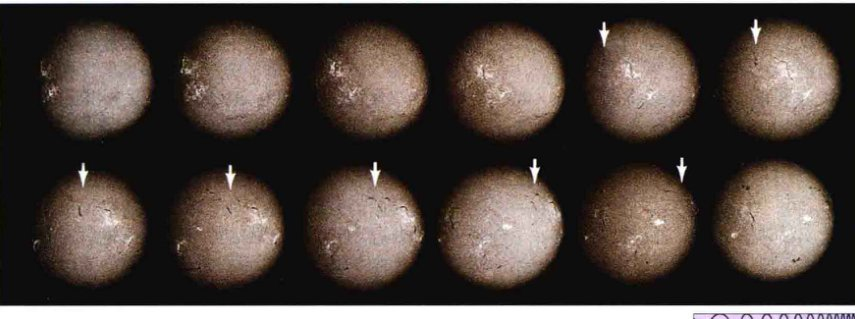这一幅从左到右的序列图显示了太阳黑子和低层色球活动在12天内的演变。空间站的太空实验室在拍摄这些照片时用到了Hα滤光片。箭头指出，一组太阳黑子在超过一周的时间里随太阳本身的自转而绕太阳运动。[美国国家航空航天局(NASA)]
(a) 20世纪内，太阳黑子每月的计数清晰地展示了（约为）11年的太阳活动周期。在太阳活动的极小期，几乎看不见什么太阳黑子。大约4年之后，在太阳活动极大期，每月大约能观测到100个黑子。 (b) 太阳活动极小时位于高纬度的太阳黑子群。随着太阳黑子数目向峰值变化，黑子出现的纬度越来越低。在重新接近太阳活动极小期时，黑子再次聚集在太阳赤道附近。
在太阳黑子活动周期内，太阳黑子出现的纬度在发生变化。独立黑子不会沿纬度上上下下运动，但新的黑子会出现在靠近赤道的地方，老的黑子同时会消失在高纬度地区。图16.19(b)是观测到的黑子的纬度随时间的函数关系图（蝴蝶图）。每个活动周期开始时，即太阳活动的极小期，只能看见几个黑子，它们一般被限制在太阳赤道以南或以北、纬度约在25°~30°的两个狭窄区域内。大约在周期开始四年后，即太阳活动极大期附近，太阳黑子的数目显著增加，出现在赤道南北纬度15°~20°之内。最后，在活动周期的末期，即太阳活动极小期，黑子的数量再次下降，大多数黑子位于赤道南北约10°内的地方。每个新活动周期的开始似乎都叠加在前一个周期的结束之上。
将这幅图片进一步复杂化，11年的黑子活动周期实际上只是更长的22年太阳活动周期的一半。在该活动周期的第一个11年内，北半球上所有黑子对的前导黑子都有着相同的极性，而南半球上的黑子则有着相反的极性（图16.16）。但在下一个11年内，这些极性会发生逆转，因此完整的太阳活动周期是22年。
天文学家认为，较差自转和对流的复合作用所造成的不断拉伸、扭曲和折叠的磁场线不仅生成，还放大了太阳磁场，但细节仍不清楚。该理论类似于解释地球和类木行星磁场的“发电机”理论，只是太阳发电机运行得更快、规模更大。该理论的一个预测是，太阳磁场会上升到极大，然后再降至零点，并逆转极性，有着或多或少的周期性，正如观测所见。太阳的表面活动，如太阳黑子周期，只是遵循着磁场的变化。随着磁场线在赤道附近缠绕得越来越紧，在磁场线的增强并最终衰竭的共同作用下，造成了黑子数目的变化和向低纬度的迁移。
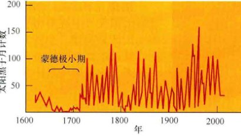过去4个世纪内太阳黑子每月的平均数目。注意，17世纪晚期黑子数目的减少。
图16.20将黑子数据的时间范围追溯到了望远镜发明时。我们可以看到，太阳黑子周期的11年“周期性”并不是太规律。不仅太阳黑子周期的长度在7~15年，而且在相当近的过去，有许多年，太阳黑子周期完全消失了。从1645年到1715年是太阳不活动的漫长时期，这被称为蒙德极小期，以注意到这些历史记录的英国天文学家命名。在那段时间内，日全食期间的日冕看起来也很不明显，17世纪晚期的地球极光现象也很稀少。由于缺乏对太阳活动周期的完整了解，我们无法轻易解释其为何完全停止活动。大多数天文学家怀疑，是太阳对流层或自转模式发生了改变，但是导致太阳发生这样长达一个世纪的变化的具体原因，以及太阳活动与地球气候之间的详细联系，仍然是一个谜（见探索5-2）。
事实上，最近一次的太阳黑子极小（2008年—2009年）导致了差不多一个世纪以来的太阳活动极小；在那些年内，几乎有80%的时间完全不能看到任何太阳黑子，并且太阳风也异常微弱。在新的活动周期里，根据2013年中期的峰值，科学家预计太阳活动也会比正常情况下弱。科学家们将活动的减少归因于16.2节中描述的表层之下的“传送带”所发生的变化，认为它直接影响了太阳黑子的行为。由于未知的原因，在20世纪90年代内，流动速度加快了几米每秒，极大地抑制了下一个活动周期内黑子的数量（并且很可能会影响在此之后的活动周期，也许影响正在发生）。周期已经开始变缓，但现在没有人能确定影响会持续多久。
✓ 太阳黑子极性的观测能告诉我们有关太阳磁场的哪些信息？
16.5 活动的太阳
大多数的太阳光来自于光球层的连续发射。然而，叠加在这种稳定的、可预测的恒星能量输出之上的，是一种更加不规则的成分，以爆发性的、不可预测的表面活动为特点。太阳活动对太阳总光度没有什么贡献，对太阳的演化可能也没有显著的影响，但是它确实影响了地球上的我们。（日）冕洞的大小和持续时间受到太阳活动水平的强烈影响。因此，太阳风的强度随之增强，转而直接影响地球的磁层。
活动范围
一对或一群太阳黑子附近的光球层表面可能是狂暴的地方，有时爆发性地喷发，喷出大量的高能粒子进入日冕。发生这些高能事件的地点被称为活动区域。大多数太阳黑子群都与活动区域有关。和其他所有太阳活动一样，这些现象往往会跟随太阳活动周期，并且在太阳活动极大时最为频繁和剧烈。
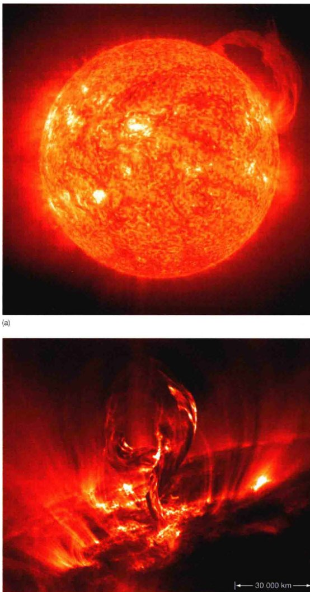图16.21展示了两个大规模的太阳日珥——发光气体环或片从太阳表面的活动区域喷涌而出，在太阳磁场的作用下穿过日冕内部。太阳黑子群内部和附近强磁场中的磁不稳定性可能是导致日珥发生的原因，尽管具体细节仍未被完全了解。还可以很容易地在活动区域内和附近看到拱形的磁场线，如图16.16(b)所示。磁场线结构的快速变化，以及它们可以迅速地将物质和能量在太阳表面输送，可能达到数万千米远的事实，使活动区域的理论研究成为格外困难的课题。
宁静日珥会持续数天甚至数周，由太阳磁场支撑着盘旋在光球层之上。活动日珥来去都很不规律，它们的外观在几小时内会发生改变，或者它们从太阳日球层如海浪般地涌起，然后马上落回光球层。就面积而言，典型的日珥范围在10万千米左右，大约是地球直径的10倍。大致如图16.21(a)所示的日珥（差不多在太阳表面穿越了约50万千米）更为少见，通常只出现在太阳活动最剧烈的时候。最大的日珥可以释放出高达 1025J的能量，包括粒子和辐射——虽然相比太阳的总光度 (4×1026W) 这并不算多，但以地球上的标准来说，仍然十分巨大。（地球上的所有发电厂需要十亿年的时间才能生产出这么多能量。）
(a) 这个特别巨大的太阳日珥是由SOHO飞船上装载的紫外探测器于2002年拍摄的。(b) 像一只凤凰从太阳表面飞起，炽热的气体纤维长度超过100,000 km。地球会被很容易地夹在伸展的“胳膊”之间。这幅TRACE图片中，黑暗区域的温度不超过20,000 K；明亮区域的温度约为100万K。大多数的气体随后会冷却，并落回到光球层。[美国国家航空航天局(NASA)]
耀斑是活动区域附近的低层太阳大气中观测到的另一种太阳活动类型。如图16.22所示，耀斑也源自磁场的不稳定性，甚至比日珥更加剧烈（我们对其了解得甚至更少）。它们经常在几分钟内在太阳的某个区域内一闪而过，随着它们的消失会释放出十分巨大的能量。空间观测表明，耀斑极度致密的中心释放出的X射线和紫外辐射尤其强烈，那里的温度可达1亿K。

这些激变的爆发是如此能量充沛，以至于一些研究者把日珥比作太阳大气低层区域内的核弹爆发。一个主要的耀斑释放出的能量与最大的日珥相当，但释放的时间只不过是几分钟或几小时，而不是几天或几周。与气体构成日珥的独特环状特征不同，耀斑产生的粒子能量如此充沛，以至于太阳磁场也不能控制并引导它们回到太阳表面。相反，在剧烈的爆发作用下，粒子只是简单地冲向太空。耀斑被认为与大多数的内部压力波有关、引起了太阳表面的振荡。
比日珥还要剧烈得多，太阳耀斑在太阳表面爆发，在区区几分钟内扫过活动区域，将太阳物质高度加速并喷入太空。[美国空军(USAF)]
图16.23显示了来自太阳的日冕物质抛射。有时（但并不是总是）与耀斑和日珥相伴，这些现象像是巨大的电离气体的磁“气泡”，与太阳大气的其他部分分隔开来，逃入行星际空间。在太阳活动极小期，这样的抛射大约每周发生一次；但在太阳活动极大期，每天会发生两到三次。由于携带了大量的能量，它们可能会——如果这些“气泡”的方向正确的话——与地球磁场融合，发生被称为磁重联的过程，由此将它们的一部分能量转移到地球磁层，并有可能导致地球上广泛的通信和电力中断[见图16.23(b)；也可见探索5-2]。
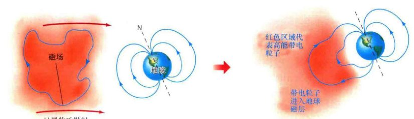(a) 平均每周几次，巨大的太阳物质的磁性“气泡”会与太阳分开并迅速逃进太空，如这幅2002年由SOHO拍摄的图像所示。图中圆圈是人为的图像系统，设计用来遮挡住太阳本身的光芒，以放大更远直径处的暗弱特征。(b) 如图所示，磁场方向与我们地球磁场方向相反的日冕物质抛射将会与地球相遇，磁场线会象图(c)那样发生连接，使得高能粒子进入并有可能严重地破坏地球磁层。相比之下，如果日冕物质抛射的磁场与地球磁场同一方向，那么它将滑过地球，几乎没有什么影响。[美国国家航空航天局(NASA)/欧洲航天局(ESA)]
变化的太阳日冕
与5800K的光球层的辐射主要集中在电磁波谱的可见光范围内不同，炽热的日冕气体辐射的频率更加高——主要位于X射线波段内。（2.4节）由于这样的原因，X射线望远镜成了研究太阳日冕的重要工具。图16.24(a)展示了太阳的几幅X射线图片。完整的日冕延伸远远超过了图像的所示区域，但发出辐射的日冕粒子的密度随着到太阳的距离的增大而迅速降低。更远处的X射线辐射的强度太过暗弱，这里无法看见。

(a) 阳光卫星观测到的太阳X射线发射图像。注意从左到右的黑暗的、V型的冕洞，那里的X射线观测生动地描述了高速太阳风流出这些异常稀薄区域的细节。 (b) 带电粒子克服引力沿着磁场线（蓝色曲线）流动。当磁场被束缚并返回到光球层时，粒子也会被束缚；否则，粒子会作为太阳风的一部分而逃逸。[日本太空和航空科学研究所(ISAS)/洛克希德马丁公司(Lockheed Martin)]
在20世纪70年代中期，美国国家航空航天局的太空实验室空间站揭示了太阳风主要通过被称为冕洞的太阳“窗口”逃逸出来。图16.24(a)中从左到右的黑暗区域就是一个冕洞，显示了来自于日本的阳光X射线太阳天文台的较新数据。这并不是真正的空洞，这样的结构只是由于缺乏足够的物质而已——大气密度比本已是稀薄的正常日冕还低约10倍的广阔区域。注意在这些图片中，底层的太阳光球看起来发黑，因为其温度太低，不能发出显著量的X射线。
冕洞内物质稀少，因为在扰动的太阳大气和磁场的共同驱动下，那里的气体能够自由地以高速流入太空。图16.24(b)说明了在冕洞内，太阳磁场线是如何从太阳表面伸展到遥远的星际空间中的。由于带电粒子倾向于沿磁场线运动，因此它们可以逃逸，特别是从太阳的极区逃逸，结论来自于SOHO和美国国家航空航天局尤利西斯飞船的发现，这两艘飞船在黄道面之上高高飞翔，探索太阳的极区。一些冕洞内的太阳风速度可达800km/s。在日冕的其他区域，太阳磁场线保持接近于太阳，使带电粒子保持在太阳表面附近，防止了太阳风的外流（正如地球磁层倾向于阻止袭击地球的太阳风进入那样），因此那里的密度相对仍然较高。由于冕洞内“开放”的磁场结构，耀斑和其他磁场活动（正如我们所见，与太阳光球附近的磁回路有关）往往在那里被抑制。
最大的冕洞，如图16.24(a)所示，可以跨越数十万千米，并可能存在多个月。这样尺寸的结构每十年只会被发现几次。小一些的冕洞——尺寸可能只有几万千米——更为常见，每隔几小时就会出现。
探索 16-2 日地关系
我们的太阳经常被看作是能主宰人类命运的神。显然，每天到达我们地球的稳恒太阳能流是我们的生活必不可少的。在过去的一个世纪内，也不断有论点宣传太阳活动与地球气候的相关性。然而，直到最近，这类话题才有了正经的科学性——也就是说，不是超自然的更自然。
事实上，22年的太阳活动周期（两次磁场极性相反的太阳黑子周期）似乎与地球上干旱气候的周期有些相关性。例如，在过去八次太阳活动周期的开始之初，北美洲都出现了干旱——至少在从南达科他州到新墨西哥州的中部和西部平原内。另一个可能的日地相关性是太阳活动和地球上增加的大气环流之间的联系。随着大气环流的增加，地球上的风暴系统被加强，延伸的纬度范围更加广泛，携带的水分更多。这种关系很复杂，相关主题争论纷纷，因为目前没有谁能展示出任何的物理机制（除了太阳的热量以外，它随太阳活动周期的变化不大），可以让太阳活动扰乱我们地球的大气。没有更好的对相关物理机制的认识，这些作用就都不能纳入我们天气预报的模型中。
太阳活动也可能会影响地球的长期气候。例如，蒙德极小期（见16.6节）似乎与所谓的小冰河期内最寒冷的年份对应得很好，在17世纪末期冰冻了欧洲北部和北美洲；在17世纪的荷兰，某个夏季就实际出现了“冬季”景色的陪伴。活动太阳和其丰富的太阳黑子如何影响地球气候是地球气候学的前沿问题。
过去20年内，太阳常数的测量表明，太阳能量输出随着太阳活动周期而变化。矛盾的是，当许多太阳黑子覆盖太阳表面时，太阳的光度却是最大！因此，蒙德极小期就对应于太阳辐射低于平均时期的延伸期。然而，最近观测到的太阳光度变化很小——不超过0.2%或0.3%。如果这是真实情况的话，那么现在还不知道蒙德极小期内太阳的输出降低了多少，或者是需要多大的改变才能解释所发生的气候变化。
太阳活动与地球地磁扰动之间的相关性现在已经明确地建立了，也得到了更好的认识。耀斑或日冕物质抛射将多余的辐射和粒子抛出，侵入地球环境，使范艾伦辐射带过载，因此在大气层中造成明亮灿烂的极光并影响我们的通信网络。我们现在才开始认识到太阳活动现象发出的辐射和粒子是如何影响地球上的雷达、电网和其他科技设备的。事实上，地球上的一些大规模停电并不是由于消费需求的增长或是设备故障，而是由于太阳天气而引起的！
✓ 为何太阳活动对地球上的生命很重要？
16.6 太阳的心脏
太阳能量来自何方？什么力量在太阳核心运作，产生如此巨大的光度？什么过程让太阳日复一日年复一年、永远地发光？找到这些问题的答案是所有天文学家的首要任务。没有它们，我们就不能理解宇宙中恒星和星系的物理存在，也不能理解地球上生物的存在。
太阳能量的产生
四舍五入后，太阳的光度是 4×1026 W，质量是 2×1030 kg。用太阳光度除以太阳质量，我们可以量度太阳能量生成的效率：
这就意味着，每千克太阳物质产生的能量约为0.2mW——每秒0.0002 J的能量。这样的能量并不多——一块燃烧的木材产生的能量约是太阳每单位质量在每单位时间内产生能量的100万倍，因此，相同的太阳光度可以（原则上）由地球上质量相当的一堆木材燃烧得到。但这并不是最重要的区别：木材不能以这样的速率持续燃烧几十亿年。
要赞赏我们的太阳所产生的能量大小，我们不仅必须要考虑太阳光度与太阳质量的比率，还要考虑每克太阳物质在作为恒星的太阳的整个生命周期内所产生的总能量。这很容易做到。我们简单地将太阳能量产生的速率乘以太阳的年龄（大约50亿年），我们得到的值是 3×1013 J/kg。这是从太阳形成起，每1kg太阳质量所辐射出的能量的平均大小，它代表了太阳总能量辐射的最小值，太阳闪耀更多一天就会需要更多的能量。太阳应该会再经历另一个50亿年（按照理论预测），我们不得不将这一数值翻倍。
不管怎样，这样的能量物质占比是非常大的。每千克太阳物质至少必须要产生60万亿焦耳（平均）的能量，才能提供太阳在整个生命周期内的能量。但太阳生成的能量不是爆发性的或在短时间内释放出大量的能量；相反，它的能量释放缓慢而稳定，提供了均匀的和长期性的能量供应。只有一种已知的能量产生机制能够令人信服地以这种方式为太阳提供能量——核聚变——轻原子核结合成较重的原子核。
核聚变
我们可以将典型的核聚变表示为：
要为太阳和其他恒星提供能量，该方程中最为重要的一环是能量的生成。至关重要的一点是，在核聚变反应期间，总质量在减少——原子核3的质量比原子核1和2的质量总和要小。质量哪儿去了呢？根据爱因斯坦著名的质能等价方程：
或 能量 = 质量 × (光速)2，这些质量转化成为能量。
该方程表达了阿尔伯特·爱因斯坦在20世纪初的发现，物质和能量能够互换——一个可以转换为另一个。要确定给定质量所对应的能量大小，只需简单地将质量乘以光速 (c) 的平方。例如，1kg物质的能量相当于 1 × (3×108)2，即 9×1016 J。光速是如此之大，以至于很小的质量就能转化为巨大的能量。
核聚变反应生成的能量是遵循质量和能量守恒定律的一个例子，质能守恒定律可以表述为质量和能量的总和（适当地利用爱因斯坦方程转换为同一单位）在任何物理过程中必须始终保持不变，没有任何的例外。根据这一定律，物体可以在概念上消失，提供一定量的能量出现在原地。如果魔术师真的让兔子消失掉，那结果将会是等于兔子质量和光速平方乘积的能量闪光——足以毁灭魔术师和每一位观众，很可能还有周围所有的一切！至于在太阳核心发生的核反应，能量主要以电磁辐射的形式产生。我们看到的来自于太阳的光芒，意味着太阳的质量一定是在缓慢而稳定地随着时间减少。
带电粒子的相互作用
所有原子核都带正电荷，因此它们互相排斥。此外，根据平方反比律，两个原子核彼此离得越近，它们之间的排斥力越大[图16.26(a)]。（2.2节）那么，原子核——比如两个质子——究竟能否融合成更重的事物呢？回答是，如果它们能够以足够高的速度发生碰撞，那么一个质子就能暂时性地深嵌入另一个质子，最终进入到强核力的极短距离内，并把原子核绑定在一起（见详细说明5-1）。在不到 10-15 m 的距离内，核力的吸引压倒了电磁场的斥力，核聚变因而发生。速度超过几百千米每秒，对应的气体温度为107 K或更高，这些都是足够快地将质子撞击在一起并引发核聚变所必需的。太阳的核心和所有恒星的中心都有着如此的条件。
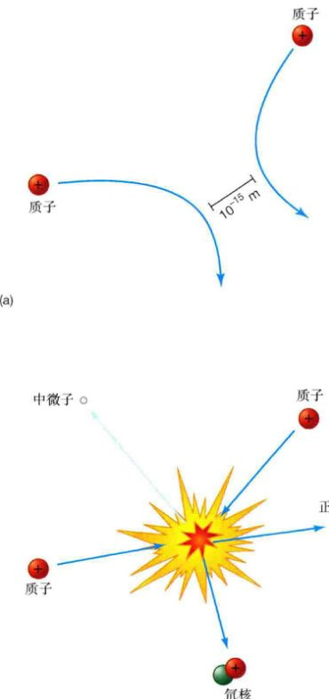(a) 由于同种电荷相斥，两个低速运动的质子远离彼此，永远不会靠得足够近而发生聚变反应。(b) 高速运动的质子可以克服它们之间的斥力，足够接近，使得强作用力能将它们束缚在一起——在这种情况下，它们剧烈碰撞，引发核聚变反应，最终为太阳提供能量。
图16.26(b)简要地说明了两个质子的聚变过程。实际上，一个质子变成了中子，在此过程中生成了新的粒子，并和另外一个质子结合形成氘核，一种被称为氘的特殊形式的氢原子核。氘（也被称为“重氢”）与普通的氢不同，因为它的原子核多了一个中子。我们可以将该反应表达如下：
这个反应中的正电子是带有一个正电荷的电子。除了带正电荷之外，正电子的属性与那些正常的、带负电荷的电子相同。科学家将电子和正电子称为“物质-反物质对”——正电子是电子的反粒子。新产生的正电子发现它们处在电子海洋之中，并立即与电子发生剧烈的相互作用。粒子与反粒子彼此湮灭（破坏），生成伽马射线光子形式的纯能量。
该反应的最终产品是一个被称为中微子的粒子，这一单词来源于意大利语的“小而中性的一个”。中微子不带电荷，质量非常低——最多只有电子质量的1/100,000，而电子的质量仅是质子质量的1/2000。（中微子的精确质量仍不清楚，尽管实验证据极力表明它的质量不为零。）中微子几乎以光速运动，而且几乎不与任何事物发生相互作用。它们可以不受阻碍地穿透几光年厚的铅（一种非常致密的物质，在地球实验室中被广泛地用于抵御辐射的有效防护）。它们与物质的相互作用由弱核力主导，见详细说明5-1中的描述。尽管它们飘忽不定，但中微子可以由精心构建的设备探测到。在这一章的最后一节中，我们会讨论某些初步的中微子“望远镜”，以及它们对太阳天文学所做出的重要贡献。
质子-质子链
图16.27简要显示了为太阳（以及绝大多数恒星）提供能量的基本核反应集。它不是一个单一的反应，而是被称为质子-质子链的反应序列。图中显示了下面的几步。
- (1) 首先，两个质子结合形成氘，如图16.26所示。
- (2) 产生的正电子与电子湮灭，以伽马射线的形式释放出能量。氘核和质子结合生成被称为氦3的氦同位素（只包含一个中子），再次以伽马射线光子的形式释放出额外的能量。图16.27中展示了这些核反应集中的两个。
- (3) 最后，两个氦3原子核结合生成一个氦4，包含两个质子，与此同时也产生更多的伽马射线能量。通过质子-质子链，太阳核心内每时每刻都有数量庞大的质子聚合成氦。释放出的能量最终成为温暖我们地球的阳光。

在质子-质子链中，总共有6个质子（还有两个电子）转化为两个质子、一个氦4核和两个中微子。反应残留的两个质子仍然是新的质子-质子反应的燃料，因此，净效应就是4个质子聚合成为一个氦4原子核。每一步里都有伽马射线形式的能量产生。（为清晰起见，大部分的质子都省略了。）这里显示的三个阶段对应于正文中所描述的 (1)、(2) 和 (3) 中的反应。
详细说明 16-1 基本作用力
我们对核反应的研究揭示了，物质在亚原子尺度上相互发生作用的新途径。让我们暂停一下，稍微以更系统的眼光来考虑自然界中各种不同的力之间的关系。
如我们所知，宇宙中所有物质的行为——从基本粒子到星系团——都只受四种（或更少的）基本力的支配，它们是宇宙万物的基础。从某种意义上说，了解宇宙本质的探求就是探索这些力的本质。
- 万有引力可能是四个之中最为有名的。引力将星系、恒星和行星约束在一起，并将人类保持在地球表面。万有引力的大小随距离以平方反比律减小。它的大小也正比于所涉及的两个物体的质量。因此，原子的引力场极其微弱，但星系的引力场却非常强大，因为它由大量的原子所构成。万有引力是迄今为止自然界中最弱的力，但随着我们移向越来越广阔的空间，引力效应不断累积，没有什么能够消除它的吸引。因此，万有引力是宇宙中所有比地球尺度更大的尺度的主导力量。
- 电磁力是另一种基本的自然力。任何带净电的粒子，比如原子中的电子或质子，会对其他任何带电粒子产生电磁力。我们身边每天所见的事物都由这种力结合起来。和万有引力一样，电磁力的强度也按平方反比律随距离而减小。（2.2节）然而，对亚原子粒子来说，电磁力比万有引力要强得多。例如，两个质子之间的电磁力比它们之间的万有引力强约 1036 倍。不像引力，电磁力可以相斥（同种电荷），还可以互相吸引（相反电荷）。
- 自然界中第三种基本力被称为弱核力。这种力比电磁力弱得多，它的作用更加微妙。弱核力支配了一些放射性原子的辐射；在质子-质子反应（图16.26）的第一步中，中微子的发射也是弱相互作用的结果。弱核力不遵循平方反比律，它的有效范围比原子核的尺寸小得多——约为 10-18 m。现在已经知道，电磁力和弱核力并不真正是完全独立的力，而是一种更为基本的电弱力的两个不同方面。
- 所有力中最强的是强核力。这种力将原子核和亚原子粒子（例如质子和中子）束缚在一起，并且支配了太阳和所有其他恒星中能量的产生过程。和弱力一样，强力仅在极端接近的距离内才有作用，而不像万有引力和电磁力。在 10-15 m 的距离之外，强力微不足道。然而，在这样的距离内（例如在原子核中），强力以巨大的力量将粒子束缚在一起。
详细说明 16-2 质子-质子链中的能量生成
让我们来更仔细地看看太阳核心的核聚变所产生的能量，并将其与满足太阳光度所需的能量相比较。使用正文中提到过的符号，质子-质子链可以用下列反应简洁描述：
质子核聚变：$$^1H + ^1H \rightarrow ^2H + \text{正电子} + \text{中微子} \quad (1)$$
氘核聚变：$$^2H + ^1H \rightarrow ^3He + \text{能量} \quad (2)$$
氦3聚变：$$^3He + ^3He \rightarrow ^4He + ^1H + ^1H + \text{能量} \quad (3)$$
如正文中的介绍和插图所示，聚变过程的净效应是四个质子结合生成一个氦4原子核，并在此过程中产生两个中微子和两个正电子（它们迅速与电子湮灭转化为能量）。
4原子的质量是 6.6466×10-27 kg，而中微子的质量几乎为零。在这里，我们省掉了正电子——它们的质量最终会被算作释放的总能量的一部分。四个质子的总质量与最终氦4原子核的质量之间的差别是 0.0477×10-27 kg，并不是很大，但很容易被测量到。
将消失的质量乘以光速的平方，得到 $$0.0477 \times 10^{-27} \text{kg} \times (3.00 \times 10^8 \text{m/s})^2 = 4.28 \times 10^{-12} \text{J}$$。这就是当 6.69×10-27 kg 的氢聚合成氦时所产生的以辐射形式存在的能量。由此可见，1kg的氢聚变后能产生 $$4.28 \times 10^{-12} / 6.69 \times 10^{-27} = 6.40 \times 10^{14} \text{J}$$ 的能量。换句话说，这一过程将0.71%的原始质量转化为能量。中微子所携带的那部分能量（实际约为2%）是微不足道的。其余的能量以伽马射线的形式出现，并最终从太阳光球层辐射出去——也就是说成为太阳光。
因此，我们建立了太阳能量输出与核心氢消耗之间的直接联系。太阳的光度是 3.84×1026 W，这意味着质量消耗速率为 $$3.84 \times 10^{26} \text{J/s} \div 6.40 \times 10^{14} \text{J/kg} = 6.00 \times 10^{11} \text{kg/s}$$ ——每秒6亿吨氢。6亿吨的质量听起来似乎很多——一座小山的质量——但这仅代表太阳总质量的百万百万百万分之几。换句话说，在这6亿吨中，每秒大约有 $$6亿吨/s \times 0.0071 = 430万吨$$ 的太阳物质转化为辐射——相当于太阳风所带走的质量。我们的母星能以这样的质量流失率维持非常长的时间。
✓ 为什么我们看到阳光的事实意味着太阳的质量在慢慢减少？
16.7 太阳中微子的观测
理论学家相当确信太阳核心中存在质子-质子链过程。然而，由于质子-质子链中产生的伽马射线能量，在从太阳内部透射出来的过程中转化为可见光和红外辐射，所以天文学家没有能够证明核心核反应的直接电磁证据。
相反，在质子-质子链中产生的中微子是我们了解太阳核心情况的最好办法。它们一尘不染地穿出太阳，在生成之后的几秒钟内逃进太空，几乎不与什么发生相互作用。当然，可以穿透整个太阳而没有相互作用的事实也使得中微子很难在地球上被探测到！然而，利用中微子物理学的知识，构造中微子探测器也是可能的。
在过去的40年里，多个实验设备被设计用于探测到达地球的太阳中微子。一些探测器使用大量的氯元素或镓元素，它们刚好比其他大多数元素稍微或更有可能与中微子发生相互作用。这种相互作用会将氯原子核变成氩原子或将镓变成锗。这些新的原子核具有放射性，探测到它们衰减时产生的放射物标志着对中微子的捕获。其他的探测器（图16.28展示了其中的两个）寻找那些当高能中微子偶尔与水分子中的电子发生碰撞，将该电子加速到接近光速时产生的光。随着该高速电子在水中穿行，它发出主要位于紫外波段的电磁辐射。在可见光波段，水看起来呈现蓝色。大型光电倍增管（光线放大设备）检测产生的暗弱辉光，用以发现中微子经过的痕迹。在所有情况中，一个给定的中微子与探测器中的物质发生相互作用的概率是格外低的——在通过仪器的 1016 个中微子中，只有一个会被实际探测到。因此需要大量（很多吨）的靶材料和长期的实验（几个月或几年）才能获得准确的测量结果。
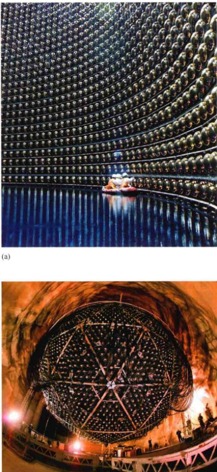(a) 这个游泳池大小的“中微子望远镜”深埋在日本东京附近的一座山下。它被叫作超级神冈，注满了50,000 t纯水，包含13,000个独立的光探测器（这里显示了其中一些，技术人员正在橡皮筏子里检查它们）来检测中微子穿过仪器时产生的指示信号——一种短暂的光猝发。 (b) 萨德伯里中微子天文台(SNO)，位于加拿大安大略省2km的地下。SNO的探测器在设计上类似于神冈的设备，但使用的是“重”水（用氘取代了氢），而不是普通的水，并且加入了2t的盐，它也对其他类型的中微子敏感。该装置包含10,000个光敏探测器，排列在这里显示的巨大球体内部。[国际放射线研究会议(ICRR)、萨德伯里中微子观测站(SNO)、美国劳伦斯伯克利国家实验室(LBNL)]
探测器的设计差别很大，它们对不同能量的中微子敏感，并且它们的结果在细节上有些不一致，但它们都一致地符合一个非常重要的观点：尽管观测到了太阳中微子（事实上在标准太阳模型所预测的能量范围内都探测到了），但太阳中微子的理论产量与地球上实际探测到的中微子数目却有着实际的差别。到达地球的太阳中微子数目比标准太阳模型预测的数目明显要低 (50%~70%)。这种差异被称为太阳中微子难题。
我们如何解释这一理论与观测的明显分歧呢？对大多数科学家来说，多个独立的、精心设计的并且经过充分测试的实验之间产生的广泛共识，意味着这不会是由实验误差引起的，研究人员相信实验结果是可信的。事实上，图16.28中展示的两个实验的项目领头人获得了2002年的诺贝尔奖，这可能是对他们工作的最令人信服的科学支持。在这样的情况下，实际上只存在两种可能性：要么太阳中微子产生的频率与我们所认为的不一样，要么不是所有的中微子都能到达地球。
太阳中微子问题的解决很可能在于太阳内部的物理。例如，我们可能会认为可以通过假定更低的太阳核心温度来减少中微子的理论数量，但之前章节中所描述的核反应太众所周知，标准太阳模型与日震观测之间的符合（16.2节）与太阳核心状态的关系过于紧密，以至于会大大偏离模型的预测。相反，答案涉及中微子本身的性质，这促使科学家重新思考一些粒子物理学中非常基本的概念。如果中微子具有哪怕只有一丁点的质量，理论表明，在它们从太阳核心飞向地球的8min旅程里，通过一种被称为中微子振荡的过程，将有可能改变它们的性质——甚至是将其转化为其他的粒子。在这样的图景里，太阳里的中微子以标准太阳模型所需的速率生成，但一些中微子在它们前往地球的道路上会转变成其他东西——实际上是其他类型的中微子——因此在之前描述过的实验中不会被探测到。（以该领域的术语来讲，中微子据说是“振动”成为其他粒子的。）
1998年，图16.28(a)中展示的由日本财团运营的超级神冈探测器报告了中微子振荡（也就是中微子质量不为零）的第一个实验证据，但观测到的振荡不涉及太阳内产生的中微子类型。之后，在2001年，加拿大安大略省的萨德伯里中微子天文台(SNO) [见图16.28(b)] 进行的测量发现了有关太阳中微子转化形成“其他”中微子的有力证据。利用改进后的探测器，SNO的后续观测证实了该结果。观测到的中微子总数与标准太阳模型完全一致。太阳中微子问题得到了解决，科学方法再次证明了自己——中微子天文学宣告了它的首次重大胜利！
✓ 以太阳中微子问题为例，讨论当发生冲突时，科学理论和观测如何发展并互相适应。
终极问题
太阳日冕为何变得如此炽热？是什么导致了11年的太阳活动周期？为什么存在太阳黑子？为什么它们看起来如此凌乱？关于太阳不止有一个重大问题，但是许多较小的、琐碎的问题却困扰了科学家几十年。尽管我们知道了恒星闪耀的基本物理原理，但我们仍然有许多不可预知的现象需要去学习，有时，它们会影响那些生活在地球上的生命。
章节回顾
小结
- 我们的太阳是一颗恒星，一个由其自身引力支撑的发光气体球，并由其中心的核聚变提供能量。光球层是太阳的表面区域，实质上所有可见光都从这里发出。太阳的主要内部区域是核，那里的核反应产生能量；辐射区是能量以电磁辐射的形式向外输送的区域；还有对流层，太阳物质在那里不断地进行对流运动。
- 每秒到达地球大气顶端 1m2 面积的太阳能量大小被称为太阳常数。太阳光度是每秒钟从太阳表面辐射出的总能量。它由太阳常数乘以一个假想半径为1天文单位的球体面积得到。
- 我们对太阳内部的了解大多来自于数学模型。与太阳的观测属性最为相符的模型是标准太阳模型。日震学——对内部压力波引起的太阳表面振动的研究——提供了进一步洞察太阳结构的知识。通过光球层中的米粒组织可见太阳对流层的作用。对流层的较低区域也以被称为超米粒组织的、更大的短暂形态，在光球层上留下足印。
- 光球层之上是色球层，即太阳的低层大气。太阳光谱里的大多数吸收线是在光球层上部和色球层中产生的。在色球层之上的过渡区，温度从几千开上升到100万开左右。在过渡区之上是稀薄的、炽热的太阳上层大气——太阳日冕。在大约15个太阳半径的距离上，日冕中的气体炽热得足以摆脱太阳的引力，日冕开始外流，形成太阳风。
- 太阳黑子是太阳表面上如地球般大小的区域，它们比周围光球层的温度稍低一些。它们是强磁场区域。随着太阳磁场的增强和减弱，太阳黑子的数目和位置以约11年的太阳黑子活动周期变化着。两个太阳黑子周期交替之时，磁场的总体方向发生倒转。当考虑磁场方向的改变时，就有了22年的太阳活动周期。
- 太阳活动往往集中在与太阳黑子群有关的活动区域里。当炽热气体由于太阳表面活动与太阳磁场发生相互作用而喷发时，便形成呈环状或片状结构的日珥。烈度更强的耀斑是太阳表面的剧烈爆炸，将粒子和辐射抛向行星际空间。日冕物质抛射是巨大的磁性气泡逃向行星际空间。太阳风大多从被称为冕洞的日冕低密度区域向外流动。
- 太阳在核心通过核聚变过程将氢转化为氦，并以此产生能量。原子核由强核力维持在一起。质子-质子链中，当4个质子转化为1个氦原子核时，会损失一些质量。质能守恒定律要求这些丢失的质量以能量的形式出现，最终产生了我们所见的光芒。极其高的温度才能引发核聚变反应。
- 中微子是几乎没有任何质量的粒子，在质子-质子链过程中产生并逃离太阳。它们通过弱核力发生相互作用。尽管它们飘忽不定，但探测一小部分来自太阳的中微子流也是可能的。几十年的观测引发了对太阳中微子难题的思考——实际上观测到的中微子比理论预测的要少得多。最近的观测证据表明，公认的解释是在从太阳前往地球的途中，中微子振荡将一些中微子转化为其他（不可探测的）粒子。
复习与讨论
- 指出并简要描述了太阳的主要组成区域。太阳表面有多热？太阳核心呢？
- 什么是光度？以太阳为例说明如何测量光度。
- 科学家怎样构建太阳模型？
- 什么是星震学，它能告诉我们有关太阳的什么信息？
- 对太阳表面的观测如何告诉我们有关太阳内部条件的信息？
- 描述在太阳核心产生的能量最终如何到达地球。
- 为什么太阳看起来有清晰的边缘？
- 什么是太阳风？
- 为什么我们说太阳活动周期有22年之长？
- 是什么导致了太阳黑子、耀斑和日珥？
- 描述日冕物质抛射如何影响地球上的生命。
- 是什么为太阳巨大的能量输出提供了燃料？
- 太阳中质子-质子链的原料和最终产物是什么？为什么质子-质子链会释放出能量？
- 为什么科学家如此着迷于太阳中微子？最有可能解决太阳中微子问题的方法是什么？
- 如果太阳内部能量来源突然消失，我们在地球上会观测到什么？你认为需要多长时间——多少分钟、多少天、多少年或多少百万年——太阳的光芒才会开始消失？那么太阳中微子呢？
概念自测：选择题
- 相比地球直径，太阳直径大约是：(a) 一样大； (b) 十倍大； (c) 一百倍大； (d) 一百万倍大。
- 总的来说，太阳的平均密度大约与什么相同？(a) 雨云； (b) 水； (c) 硅酸盐岩石； (d) 铁镍陨石。
- 太阳绕其自转轴转一圈大约需要：(a) 一小时； (b) 一天； (c) 一个月； (d) 一年。
- 如果天文学家不是生活在地球上，而是生活在金星上，那么他们测得的太阳常数会：(a) 更大； (b) 更小； (c) 一样大。
- 太阳能量的主要来源是：(a) 轻原子核聚变成重原子核； (b) 重原子核裂变成轻原子核； (c) 太阳形成时剩下的能量在缓慢释放； (d) 太阳磁场。
- 根据太阳的标准模型（图16.6），随着到中心距离的增加，密度会减小得：(a) 大约与温度下降的速率一样； (b) 比温度降低的速率快； (c) 比温度下降的速率更慢； (d) 只有温度在增加。
- 一个典型的太阳米粒组织的大小约为：(a) 美国的一个城市； (b) 美国的一个州； (c) 月球； (d) 地球。
- 随着距离太阳光球层越来越远，太阳大气的温度：(a) 逐渐上升； (b) 逐渐下降； (c) 先是降低然后上升； (d) 保持不变。
- 连续两个太阳黑子极大的时间间隔是：(a) 一个月； (b) 一年； (c) 十年； (d) 一百年。
- 太阳中微子难题是：(a) 我们探测到比预想更多的太阳中微子； (b) 我们探测到比预想更少的太阳中微子； (c) 我们探测到错误类型的中微子； (d) 我们不能探测到太阳中微子。
问答
问题序号后的圆点表示题目的大致难度。
- ● 利用16.1节中提供的原理计算“太阳常数”(a) 水星近日点的，(b) 木星上。
- ● 利用维恩定理确定(a) 太阳核心，温度为 $$10^7$$ K，(b) 太阳对流层中 ($$10^5$$ K) 和 (c) 太阳光球层之下 ($$10^4$$ K) 的黑体曲线峰值所对应的波长。(2.4节) 在这些不同情况下，辐射的形式是什么（可见光、红外、X射线等）？
- ●● 振幅最大的太阳压力波周期约为5min，并以太阳外层的声速运动，速度约为10km/s。(a) 在一个波的周期内，这样的压力波运动了多远？(b) 大约需要多少个波才能完整地绕太阳赤道一圈？(c) 将该波的周期与正好在太阳光球层之上运动的物体的轨道周期进行比较。
- ● 如果太阳物质以1km/s的速度发生对流，需要多长时间才能穿过宽达1000km的典型米粒组织？将你的答案与大多数太阳米粒组织大约为10min的观测寿命相比较。
- ●● 利用斯特藩定律（流速∝T4，T为温度，单位为开尔文）计算，4500K的太阳黑子比周围5800K的光球层，每单位面积少辐射多少能量（以比例表示）。(2.4节)
- ● 太阳风以大约200万吨/s的速度将物质带离太阳。按这样的速率，需要多长时间才能将所有的太阳物质带走？
- ● 利用本章提到的知识估计，以日冕中质子的速度，在什么半径处开始超过太阳的逃逸速度。
- ●● (a) 假设太阳光度为常数，计算在其形成后的46亿年里，太阳向太空的辐射相当于多少质量（以当前太阳的质量为单位）。消耗了多少氢呢？(b) 需要多长时间，太阳才能将所有质量辐射进太空？